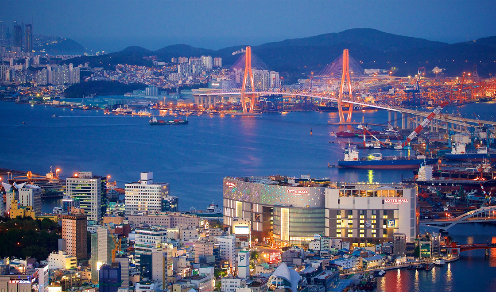
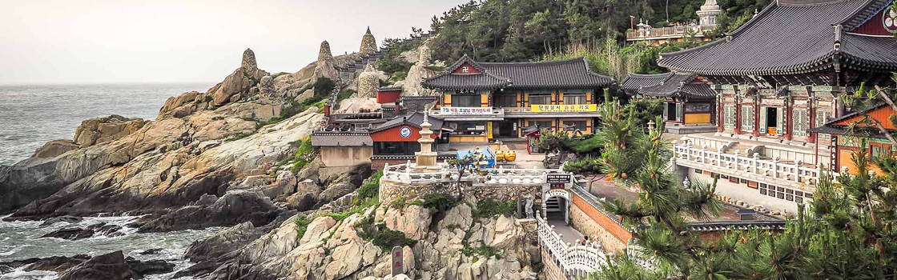
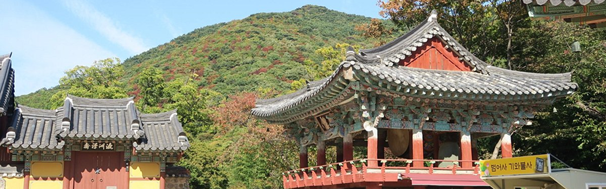
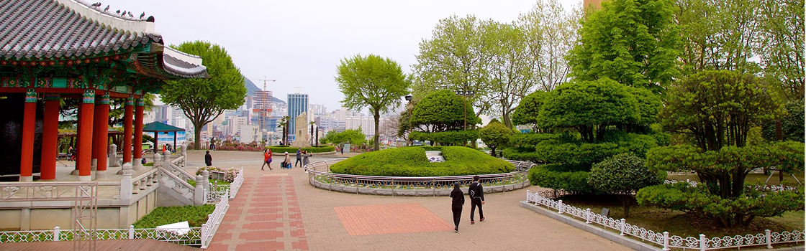

YOUR NEXT TRIP:
Meet Busan

Busan, the rising star of South Korea, offers everything from top-notch barbecue restaurants to traditional street food stalls.
Here, we explore South Korea's second-largest city and discover its culinary offerings.
FOR HISTORY LOVERS:
Discover 3 Must-See Destinations in Busan
Busan's attractions range from centuries-old Buddhist temples dotting the mountains and coastline to pristine beaches with crystal-clear waters...

Haedong Yonggunsa Temple
Haedong Yonggungsa Temple is a Buddhist temple located in the far northeast of Busan. Built in 1376, it is one of the few seaside temples in Korea – you can enjoy views of the East Sea and beautiful mountains.
Good for:

Beomeo-sa Temple
Beomeo-sa Temple is one of the largest sanctuaries in South Korea. It is located on the upper east edge of Geumjeongsa Mountain, away from the city's hustle and bustle.
Good for:

Yongdusan Park
Yongdusan Park, located in the heart of Busan, houses some of the city's most important monuments, including the 120-meter-high Busan Tower. The park features 2 museums and various cultural attractions.
Good for:
- Couples
- Families
- Budget-friendly